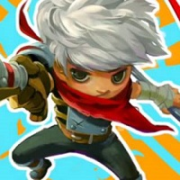
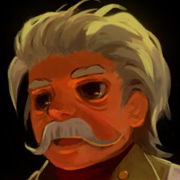
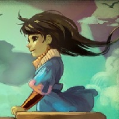
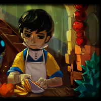

Bastion The Video Game
Bastion
Bastion is an action role-playing game with a level structure. The player character, "the Kid", moves through floating, fantasy-themed environments that form paths as the player approaches the edge. Levels consist of a single plane, and are viewed isometrically. They are filled with enemies of various types, which attempt to harm the Kid. The Kid carries two weapons, which may be selected from the choices available to the player at specific locations called arsenals. Levels contain many different environment types, including cities, forests, and bogs. At the end of most levels, the player collects an item called a core or a shard; occasionally, the level begins to disintegrate once the Kid takes the item, forcing him to hastily retreat. As the player progresses through the levels, a voice narrates their actions. This narration gives scripted plot information as well as dynamic comments, such as on the player's skill with a weapon or performance while fighting enemies.
Theme Related Thumbnails
   Challenge Modes
Whenever the player leaves the Bastion, they can choose between one or two regular levels to play. In addition to these levels, however, the Kid can engage in challenge courses designed to test the player's skills with the weapons the player has found. They are called Proving Grounds. The challenges differ depending on the weapon, such as destroying a certain number of objects within a given time or breaking targets in the fewest shots possible. Additionally, the Kid can fight waves of enemies while the narrator tells a character's backstory by journeying to "Who Knows Where" from the Bastion. The back story battles occur during 'Memories.' The player earns fragments and experience for each completed wave.
Reception In Industry
Bastion was released to strong sales and critical acclaim. The game sold more than 500,000 copies during 2011, 200,000 of which were for the Xbox Live Arcade. In March 2013 at the PAX East gaming convention, Bastion's creative director Greg Kasavin stated that the game had sold more than 1.7 million copies combined across all platforms. By May 2014, the game had sold over 2 million copies, and by January 2015, it had sold over 3 million. Bob Mackey of 1UP.com called it "the perfect mesh of game and story", and McKinley Noble of GamePro said that it "raises the visual and narrative bar for downloadable titles". Maxwell McGee of GameSpot called it "wonderfully crafted".